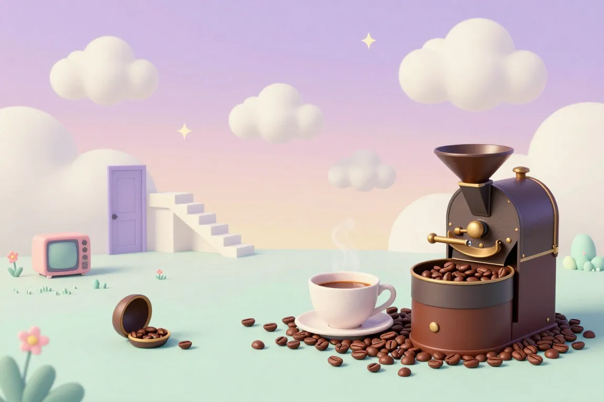

Myke, disige bilder av barndomsrom, pastellhimler, gamle leker og trapper, med et svakt skjær og uskarp tekst. Det ser ut som en halvt husket drøm og vokste på Tumblr, Reddit og videosider.

Kjerneidé
Vis et minne slik en drøm gjør det: mykt, glødende og litt feil, med detaljene ute av fokus.
Designprinsipper
Sett bunnen i en pastellgradient fra #FBE3F0 til #CFE3FF ved 180°.
Legg en bloom på 12px til 24px på alle lyse flater og senk kontrasten med 15 % til 25 %.
Bruk ett mykt fokusbilde (et rom, en leke eller en himmel) på 50 % til 70 % av bildet.
Legg til én merkelig detalj: en dør på en mark, en trapp uten topp eller et gjentatt vindu.
Sett tekst i en tynn seriff eller en avrundet sans på 14px til 28px, i hvitt eller lilla ved 60 % dekning.
Legg til korn på 4 % til 6 % og en vignett på 15 %.
Hold bevegelsen sakte: løkker på 8s til 20s med kryssoverganger på 1,2s.